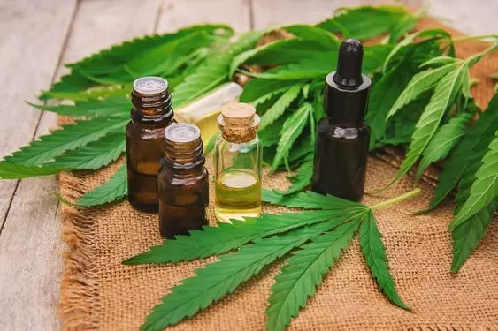

Mitos y realidades del cannabis medicinal
El cannabis medicinal ha ganado popularidad como alternativa terapéutica, pero aún existen muchas creencias erróneas. A continuación exploramos algunos de los mitos más comunes y la realidad detrás de ellos.
Mito: el cannabis medicinal siempre genera efectos psicoactivos
Realidad: los productos ricos en CBD no producen la sensación de euforia asociada al THC, por lo que pueden usarse sin alterar la percepción.
Mito: todas las variedades de cannabis tienen el mismo efecto
Realidad: cada cepa posee diferentes proporciones de cannabinoides y terpenos que influyen en sus efectos. Elegir la variedad adecuada es clave para un tratamiento eficaz.
Mito: el cannabis medicinal no tiene respaldo científico
Realidad: numerosos estudios y testimonios clínicos avalan sus beneficios en el manejo del dolor, la ansiedad y otras afecciones, aunque siempre debe usarse bajo supervisión profesional.